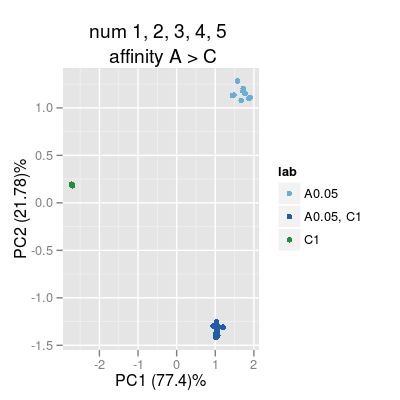
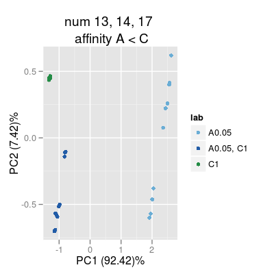
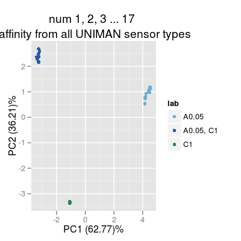

Demo SensorAffinity.
# concentration matrix of 3 gas classes: A, C and AC conc <- matrix(0, 30, 3) conc[1:10, 1] <- 0.05 # A conc[11:20, 3] <- 1 # C conc[21:30, 1] <- 0.05 # AC conc[21:30, 3] <- 1 # AC conc <- conc[sample(1:nrow(conc)), ] # two sensor arrays composed of different sensors sa1 <- SensorArray(num=1:5, dsd=0) # sensors with affinity A > C sa2 <- SensorArray(num=c(13, 14, 17), dsd=0) # sensors with affinity A < C # PCA scoreplots of sensors array data in response to the concentration matrix plot(sa1, "prediction", conc=conc, leg="top", main=paste("num", numStr(sa1), "\n affinity A > C"))

# 3rd array composed of all 17 UNIMAN types sa3 <- SensorArray(num=1:17, dsd=0) plot(sa3, "prediction", conc=conc, leg="top", main=paste("num", numStr(sa3), "\n affinity from all UNIMAN sensor types"))